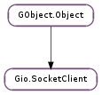

| static | new() |
| add_application_proxy(protocol) | |
| connect(connectable, cancellable) | |
| connect_async(connectable, cancellable, callback, *user_data) | |
| connect_finish(result) | |
| connect_to_host(host_and_port, default_port, cancellable) | |
| connect_to_host_async(host_and_port, default_port, cancellable, callback, *user_data) | |
| connect_to_host_finish(result) | |
| connect_to_service(domain, service, cancellable) | |
| connect_to_service_async(domain, service, cancellable, callback, *user_data) | |
| connect_to_service_finish(result) | |
| connect_to_uri(uri, default_port, cancellable) | |
| connect_to_uri_async(uri, default_port, cancellable, callback, *user_data) | |
| connect_to_uri_finish(result) | |
| get_enable_proxy() | |
| get_family() | |
| get_local_address() | |
| get_protocol() | |
| get_proxy_resolver() | |
| get_socket_type() | |
| get_timeout() | |
| get_tls() | |
| get_tls_validation_flags() | |
| set_enable_proxy(enable) | |
| set_family(family) | |
| set_local_address(address) | |
| set_protocol(protocol) | |
| set_proxy_resolver(proxy_resolver) | |
| set_socket_type(type) | |
| set_timeout(timeout) | |
| set_tls(tls) | |
| set_tls_validation_flags(flags) |
| Name | Type | Flags | Description |
|---|---|---|---|
| enable-proxy | bool | r/w | Enable proxy support |
| family | Gio.SocketFamily | r/w | The sockets address family to use for socket construction |
| local-address | Gio.SocketAddress | r/w | The local address constructed sockets will be bound to |
| protocol | Gio.SocketProtocol | r/w | The protocol to use for socket construction, or 0 for default |
| proxy-resolver | Gio.ProxyResolver | r/w | The proxy resolver to use |
| timeout | int | r/w | The I/O timeout for sockets, or 0 for none |
| tls | bool | r/w | Whether to create TLS connections |
| tls-validation-flags | Gio.TlsCertificateFlags | r/w | TLS validation flags to use |
| type | Gio.SocketType | r/w | The sockets type to use for socket construction |
| Name | Parameters | Return | Description |
|---|---|---|---|
| event | Gio.SocketClientEvent, Gio.SocketConnectable, Gio.IOStream | Emitted when client ‘s activity on connectable changes state. Among other things, this can be used to provide progress information about a network connection in the UI. The meanings of the different event values are as follows: Gio.SocketClientEvent.RESOLVING: client is about to look up connectable in DNS. connection will be None. Gio.SocketClientEvent.RESOLVED: client has successfully resolved connectable in DNS. connection will be None. Gio.SocketClientEvent.CONNECTING: client is about to make a connection to a remote host; either a proxy server or the destination server itself. connection is the Gio.SocketConnection, which is not yet connected. Gio.SocketClientEvent.CONNECTED: client has successfully connected to a remote host. connection is the connected Gio.SocketConnection. Gio.SocketClientEvent.PROXY_NEGOTIATING: client is about to negotiate with a proxy to get it to connect to connectable. connection is the Gio.SocketConnection to the proxy server. Gio.SocketClientEvent.PROXY_NEGOTIATED: client has negotiated a connection to connectable through a proxy server. connection is the stream returned from Gio.Proxy.connect (), which may or may not be a Gio.SocketConnection. Gio.SocketClientEvent.TLS_HANDSHAKING: client is about to begin a TLS handshake. connection is a Gio.TlsClientConnection. Gio.SocketClientEvent.TLS_HANDSHAKED: client has successfully completed the TLS handshake. connection is a Gio.TlsClientConnection. Gio.SocketClientEvent.COMPLETE: client has either successfully connected to connectable (in which case connection is the Gio.SocketConnection that it will be returning to the caller) or has failed (in which case connection is None and the client is about to return an error). Each event except Gio.SocketClientEvent.COMPLETE may be emitted multiple times (or not at all) for a given connectable (in particular, if client ends up attempting to connect to more than one address). However, if client emits the Gio.SocketClient ::event signal at all for a given connectable, that it will always emit it with Gio.SocketClientEvent.COMPLETE when it is done. Note that there may be additional Gio.SocketClientEvent values in the future; unrecognized event values should be ignored. |
| Name | Type | Access |
|---|---|---|
| parent_instance | GObject.Object | r |
Bases: GObject.Object
Gio.SocketClient is a lightweight high-level utility class for connecting to a network host using a connection oriented socket type.
You create a Gio.SocketClient object, set any options you want, and then call a sync or async connect operation, which returns a Gio.SocketConnection subclass on success.
The type of the Gio.SocketConnection object returned depends on the type of the underlying socket that is in use. For instance, for a TCP/IP connection it will be a Gio.TcpConnection.
As Gio.SocketClient is a lightweight object, you don’t need to cache it. You can just create a new one any time you need one.
| Returns: | a Gio.SocketClient. Free the returned object with GObject.Object.unref (). |
|---|---|
| Return type: | Gio.SocketClient |
Creates a new Gio.SocketClient with the default options.
| Parameters: | protocol (str) – The proxy protocol |
|---|
Enable proxy protocols to be handled by the application. When the indicated proxy protocol is returned by the Gio.ProxyResolver, Gio.SocketClient will consider this protocol as supported but will not try to find a Gio.Proxy instance to handle handshaking. The application must check for this case by calling Gio.SocketConnection.get_remote_address () on the returned Gio.SocketConnection, and seeing if it’s a Gio.ProxyAddress of the appropriate type, to determine whether or not it needs to handle the proxy handshaking itself.
This should be used for proxy protocols that are dialects of another protocol such as HTTP proxy. It also allows cohabitation of proxy protocols that are reused between protocols. A good example is HTTP. It can be used to proxy HTTP, FTP and Gopher and can also be use as generic socket proxy through the HTTP CONNECT method.
When the proxy is detected as being an application proxy, TLS handshake will be skipped. This is required to let the application do the proxy specific handshake.
| Parameters: |
|
|---|---|
| Raises: | |
| Returns: | a Gio.SocketConnection on success, None on error. |
| Return type: |
Tries to resolve the connectable and make a network connection to it.
Upon a successful connection, a new Gio.SocketConnection is constructed and returned. The caller owns this new object and must drop their reference to it when finished with it.
The type of the Gio.SocketConnection object returned depends on the type of the underlying socket that is used. For instance, for a TCP/IP connection it will be a Gio.TcpConnection.
The socket created will be the same family as the address that the connectable resolves to, unless family is set with Gio.SocketClient.set_family () or indirectly via Gio.SocketClient.set_local_address (). The socket type defaults to Gio.SocketType.STREAM but can be set with Gio.SocketClient.set_socket_type ().
If a local address is specified with Gio.SocketClient.set_local_address () the socket will be bound to this address before connecting.
| Parameters: |
|
|---|
This is the asynchronous version of Gio.SocketClient.connect ().
When the operation is finished callback will be called. You can then call Gio.SocketClient.connect_finish () to get the result of the operation.
| Parameters: | result (Gio.AsyncResult) – a Gio.AsyncResult. |
|---|---|
| Raises: | GLib.GError |
| Returns: | a Gio.SocketConnection on success, None on error. |
| Return type: | Gio.SocketConnection |
Finishes an async connect operation. See Gio.SocketClient.connect_async ()
| Parameters: |
|
|---|---|
| Raises: | |
| Returns: | a Gio.SocketConnection on success, None on error. |
| Return type: |
This is a helper function for Gio.SocketClient.connect ().
Attempts to create a TCP connection to the named host.
host_and_port may be in any of a number of recognized formats; an IPv6 address, an IPv4 address, or a domain name (in which case a DNS lookup is performed). Quoting with [] is supported for all address types. A port override may be specified in the usual way with a colon. Ports may be given as decimal numbers or symbolic names (in which case an /etc/services lookup is performed).
If no port override is given in host_and_port then default_port will be used as the port number to connect to.
In general, host_and_port is expected to be provided by the user (allowing them to give the hostname, and a port override if necessary) and default_port is expected to be provided by the application.
In the case that an IP address is given, a single connection attempt is made. In the case that a name is given, multiple connection attempts may be made, in turn and according to the number of address records in DNS, until a connection succeeds.
Upon a successful connection, a new Gio.SocketConnection is constructed and returned. The caller owns this new object and must drop their reference to it when finished with it.
In the event of any failure (DNS error, service not found, no hosts connectable) None is returned and error (if non-None ) is set accordingly.
| Parameters: |
|
|---|
This is the asynchronous version of Gio.SocketClient.connect_to_host ().
When the operation is finished callback will be called. You can then call Gio.SocketClient.connect_to_host_finish () to get the result of the operation.
| Parameters: | result (Gio.AsyncResult) – a Gio.AsyncResult. |
|---|---|
| Raises: | GLib.GError |
| Returns: | a Gio.SocketConnection on success, None on error. |
| Return type: | Gio.SocketConnection |
Finishes an async connect operation. See Gio.SocketClient.connect_to_host_async ()
| Parameters: |
|
|---|---|
| Raises: | |
| Returns: | a Gio.SocketConnection if successful, or None on error |
| Return type: |
Attempts to create a TCP connection to a service.
This call looks up the SRV record for service at domain for the “tcp” protocol. It then attempts to connect, in turn, to each of the hosts providing the service until either a connection succeeds or there are no hosts remaining.
Upon a successful connection, a new Gio.SocketConnection is constructed and returned. The caller owns this new object and must drop their reference to it when finished with it.
In the event of any failure (DNS error, service not found, no hosts connectable) None is returned and error (if non-None ) is set accordingly.
| Parameters: |
|
|---|
This is the asynchronous version of Gio.SocketClient.connect_to_service ().
| Parameters: | result (Gio.AsyncResult) – a Gio.AsyncResult. |
|---|---|
| Raises: | GLib.GError |
| Returns: | a Gio.SocketConnection on success, None on error. |
| Return type: | Gio.SocketConnection |
Finishes an async connect operation. See Gio.SocketClient.connect_to_service_async ()
| Parameters: |
|
|---|---|
| Raises: | |
| Returns: | a Gio.SocketConnection on success, None on error. |
| Return type: |
This is a helper function for Gio.SocketClient.connect ().
Attempts to create a TCP connection with a network URI.
uri may be any valid URI containing an “authority” (hostname/port) component. If a port is not specified in the URI, default_port will be used. TLS will be negotiated if Gio.SocketClient :tls is True. (Gio.SocketClient does not know to automatically assume TLS for certain URI schemes.)
Using this rather than Gio.SocketClient.connect () or Gio.SocketClient.connect_to_host () allows Gio.SocketClient to determine when to use application-specific proxy protocols.
Upon a successful connection, a new Gio.SocketConnection is constructed and returned. The caller owns this new object and must drop their reference to it when finished with it.
In the event of any failure (DNS error, service not found, no hosts connectable) None is returned and error (if non-None ) is set accordingly.
| Parameters: |
|
|---|
This is the asynchronous version of Gio.SocketClient.connect_to_uri ().
When the operation is finished callback will be called. You can then call Gio.SocketClient.connect_to_uri_finish () to get the result of the operation.
| Parameters: | result (Gio.AsyncResult) – a Gio.AsyncResult. |
|---|---|
| Raises: | GLib.GError |
| Returns: | a Gio.SocketConnection on success, None on error. |
| Return type: | Gio.SocketConnection |
Finishes an async connect operation. See Gio.SocketClient.connect_to_uri_async ()
| Returns: | whether proxying is enabled |
|---|---|
| Return type: | bool |
Gets the proxy enable state; see Gio.SocketClient.set_enable_proxy ()
| Returns: | a Gio.SocketFamily |
|---|---|
| Return type: | Gio.SocketFamily |
Gets the socket family of the socket client.
See Gio.SocketClient.set_family () for details.
| Returns: | a Gio.SocketAddress or None. Do not free. |
|---|---|
| Return type: | Gio.SocketAddress |
Gets the local address of the socket client.
See Gio.SocketClient.set_local_address () for details.
| Returns: | a Gio.SocketProtocol |
|---|---|
| Return type: | Gio.SocketProtocol |
Gets the protocol name type of the socket client.
See Gio.SocketClient.set_protocol () for details.
| Returns: | The Gio.ProxyResolver being used by client. |
|---|---|
| Return type: | Gio.ProxyResolver |
Gets the Gio.ProxyResolver being used by client. Normally, this will be the resolver returned by Gio.ProxyResolver.get_default (), but you can override it with Gio.SocketClient.set_proxy_resolver ().
| Returns: | a Gio.SocketFamily |
|---|---|
| Return type: | Gio.SocketType |
Gets the socket type of the socket client.
See Gio.SocketClient.set_socket_type () for details.
| Returns: | the timeout in seconds |
|---|---|
| Return type: | int |
Gets the I/O timeout time for sockets created by client.
See Gio.SocketClient.set_timeout () for details.
| Returns: | whether client uses TLS |
|---|---|
| Return type: | bool |
Gets whether client creates TLS connections. See Gio.SocketClient.set_tls () for details.
| Returns: | the TLS validation flags |
|---|---|
| Return type: | Gio.TlsCertificateFlags |
Gets the TLS validation flags used creating TLS connections via client.
| Parameters: | enable (bool) – whether to enable proxies |
|---|
Sets whether or not client attempts to make connections via a proxy server. When enabled (the default), Gio.SocketClient will use a Gio.ProxyResolver to determine if a proxy protocol such as SOCKS is needed, and automatically do the necessary proxy negotiation.
See also Gio.SocketClient.set_proxy_resolver ().
| Parameters: | family (Gio.SocketFamily) – a Gio.SocketFamily |
|---|
Sets the socket family of the socket client. If this is set to something other than Gio.SocketFamily.INVALID then the sockets created by this object will be of the specified family.
This might be useful for instance if you want to force the local connection to be an ipv4 socket, even though the address might be an ipv6 mapped to ipv4 address.
| Parameters: | address (Gio.SocketAddress or None) – a Gio.SocketAddress, or None |
|---|
Sets the local address of the socket client. The sockets created by this object will bound to the specified address (if not None ) before connecting.
This is useful if you want to ensure that the local side of the connection is on a specific port, or on a specific interface.
| Parameters: | protocol (Gio.SocketProtocol) – a Gio.SocketProtocol |
|---|
Sets the protocol of the socket client. The sockets created by this object will use of the specified protocol.
If protocol is %0 that means to use the default protocol for the socket family and type.
| Parameters: | proxy_resolver (Gio.ProxyResolver or None) – a Gio.ProxyResolver, or None for the default. |
|---|
Overrides the Gio.ProxyResolver used by client. You can call this if you want to use specific proxies, rather than using the system default proxy settings.
Note that whether or not the proxy resolver is actually used depends on the setting of Gio.SocketClient :enable-proxy, which is not changed by this function (but which is True by default)
| Parameters: | type (Gio.SocketType) – a Gio.SocketType |
|---|
Sets the socket type of the socket client. The sockets created by this object will be of the specified type.
It doesn’t make sense to specify a type of Gio.SocketType.DATAGRAM, as Gio.SocketClient is used for connection oriented services.
| Parameters: | timeout (int) – the timeout |
|---|
Sets the I/O timeout for sockets created by client. timeout is a time in seconds, or 0 for no timeout (the default).
The timeout value affects the initial connection attempt as well, so setting this may cause calls to Gio.SocketClient.connect (), etc, to fail with Gio.IOErrorEnum.TIMED_OUT.
| Parameters: | tls (bool) – whether to use TLS |
|---|
Sets whether client creates TLS (aka SSL) connections. If tls is True, client will wrap its connections in a Gio.TlsClientConnection and perform a TLS handshake when connecting.
Note that since Gio.SocketClient must return a Gio.SocketConnection, but Gio.TlsClientConnection is not a Gio.SocketConnection, this actually wraps the resulting Gio.TlsClientConnection in a Gio.TcpWrapperConnection when returning it. You can use Gio.TcpWrapperConnection.get_base_io_stream () on the return value to extract the Gio.TlsClientConnection.
If you need to modify the behavior of the TLS handshake (eg, by setting a client-side certificate to use, or connecting to the Gio.TlsConnection ::accept-certificate signal), you can connect to client ‘s Gio.SocketClient ::event signal and wait for it to be emitted with Gio.SocketClientEvent.TLS_HANDSHAKING, which will give you a chance to see the Gio.TlsClientConnection before the handshake starts.
| Parameters: | flags (Gio.TlsCertificateFlags) – the validation flags |
|---|
Sets the TLS validation flags used when creating TLS connections via client. The default value is Gio.TlsCertificateFlags.VALIDATE_ALL.